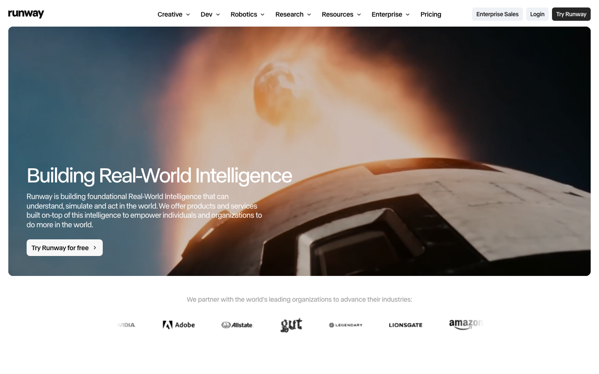
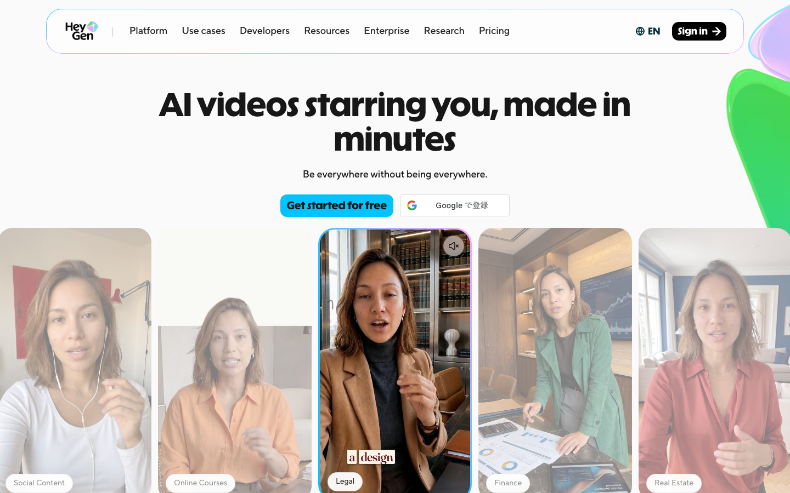
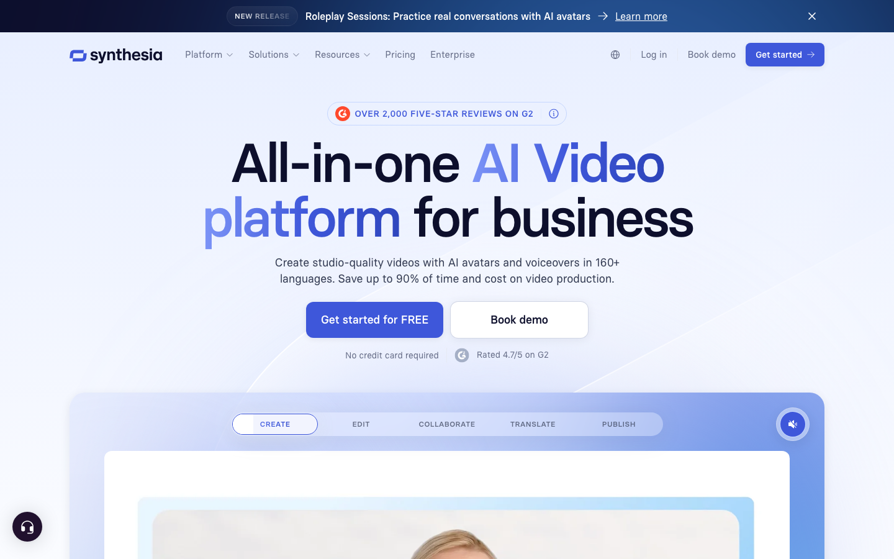

AI VIDEO / 比較ガイド
AI動画生成サービス比較｜Runway・HeyGen・Synthesia・Firefly【2026年】
AI動画は、映像を作るのか、人物が説明するのか、研修を量産するのかで最適なサービスが変わります。公式の価格・利用量と、日本語を含む国内外レビューを突き合わせ、選ぶ理由まで一つの記事にまとめました。
- 広告・SNS：Runway。短尺の生成映像と編集に強く、長尺のアバター説明には向きません。
- 営業・多言語：HeyGen。アバター・翻訳・音声クローンを一体で使えますが、動画分数の単価換算式は公開されていません。
- 研修：Synthesia。月10分枠を基準に教材を更新しやすく、自由な映像表現には不向きです。
- 価格の入口：Adobe Fireflyは$9.99/月、Runwayは$15/月、HeyGenとSynthesiaは$29/月。短尺素材はFirefly/Runway、分数管理はSynthesiaが判断しやすいです。
料金・usage・コスパ比較（2026年7月31日時点）
価格は米ドルの公式表示をそのまま掲載しています。動画生成はサービスごとに単位が違うため、分数を公開しているサービスは1分あたり、5秒クリップを公開しているサービスは1本あたりで実効コストを計算しました。
比較シナリオ：月に短尺素材を20本作る広告チームを想定し、映像生成は5秒クリップ、アバター動画は月10分、研修動画は月10分を基準にしました。短尺素材の量ならRunwayとFirefly、説明動画の分数ならSynthesia、翻訳まで一体で回すならHeyGenという判断になります。
| サービス（公式） | 代表プランと月額 | 含まれるusage | 実効コスト | コスパの結論 |
|---|---|---|---|---|
| Runway | Standard $15/月、年払い表示 $12/月 | 625 credits/月。Gen-4.5なら約52秒、Gen-4 Turboなら約104秒 | Gen-4.5で約$0.29/秒（年払い約$0.23/秒） | 短い高品質クリップを何度も作るなら強い。長尺量産は割高 |
| HeyGen | Creator $29/月、Pro $49/月 | Creatorは600 credits、最大30分/動画、175言語以上、透かしなし | 分数換算の公開式がないため算定不能 | アバター・翻訳・音声クローンを一つにまとめる価値が高い |
| Synthesia | Starter $29/月、年払い表示 $18/月 | 最大10分/月、125以上のアバター、Starterは編集者1名+ゲスト3名 | 月払い約$2.90/分、年払い約$1.80/分 | 研修・説明の定型動画を継続するなら分数単価が読みやすい |
| Adobe Firefly | Standard $9.99/月、Pro $19.99/月 | Standard 2,000 credits、5秒動画を最大20本相当 | Standardで約$0.50/5秒クリップ | Adobe利用中なら素材生成の追加コストを抑えやすい |
HeyGenは公式のcreditsから動画分数への換算式を公開していないため、無理な単価比較をしません。アバター・翻訳・音声を別サービスで揃える費用が不要になる点をコスパとして評価します。
4サービスの実力と口コミ

Runway：映像素材の生成・編集
テキスト、画像、既存クリップから短い映像を作り、編集まで同じ画面で進められます。海外の利用者レビューではGen-4 Turboの効率と画づくりが好評な一方、失敗生成でもcreditsが減る、人物や物体が変形するという不満が繰り返し見られます。短尺広告の案出しには強いものの、同じ人物を長時間話させる用途には向きません。

HeyGen：アバター・営業・翻訳
アバター、音声クローン、翻訳を一体で扱えるため、営業説明や多言語動画を早く揃えたい人に向きます。G2とCapterraでは操作性と制作量が評価される一方、映像のグリッチ、アカウント対応、サポートへの不満もあります。人物の自然さより、台本を差し替えて同じ説明を展開する仕事で価値が出ます。

Synthesia：研修・eラーニング
アバター、字幕、翻訳、スライドからの説明動画を整然と作れるサービスです。一定の見た目で教材を更新する仕事に向き、10分/月のように利用量を読みやすい点も利点です。自由な映像表現や映画的なカットを作るツールではなく、説明の正確さとテンプレート運用を優先する人向けです。

Adobe Firefly：Adobeワークフローとの接続
画像・動画・音声の生成をAdobeの編集環境へつなげられます。G2ではCreative Cloudとの一体感が評価され、TechRadarの実用レビューでは生成品質とBoardsが好評でした。一方、専門動画エディターより速度が遅く、アバター機能がない点が弱みです。既にAdobeを使っているなら候補、単体で長尺動画を作るなら優先度は下がります。
強み・弱み比較表
| サービス | 強み | 弱み | 向く人 | 向かない人 |
|---|---|---|---|---|
| Runway | 生成映像の表現幅、編集、短尺素材 | credits消費、人物の一貫性、長尺 | 広告・SNSの映像担当 | 講師アバターを量産したい人 |
| HeyGen | アバター、翻訳、音声、営業展開 | グリッチ、サポート、分数単価の不透明さ | 営業・多言語説明 | 映画的な映像表現が必要な人 |
| Synthesia | 研修テンプレート、アバター、分数管理 | 自由な映像表現、Starterの編集者枠 | 研修・eラーニング担当 | 短尺映像のアイデアを大量に出す人 |
| Firefly | Adobe連携、素材生成、ブランド制作 | 動画速度、アバターなし、creditsの複雑さ | Creative Cloud利用者 | 単体で説明動画を完結したい人 |
用途別の決定ルール
Runway
5〜10秒の素材を複数案作り、編集で一本にまとめる仕事に最短です。
HeyGen
説明者を固定し、言語や顧客別の台本を差し替える仕事に最短です。
Synthesia
章立てした教材を繰り返し更新する仕事に最短です。
Firefly
既存素材を編集しながら生成も使う場合に最短です。
料金だけで決めるならFirefly、アバターの仕事ならHeyGenまたはSynthesia、生成映像の表現ならRunwayです。用途が複数ある場合は、主業務の一つを第一候補に合わせ、残りは連携できる補助ツールとして扱う方がコストが膨らみません。
自社の業務へ最短経路で組み込む
サービスを選んでも、台本の置き場、素材の再利用、公開先、効果指標が決まっていなければ制作は止まります。AI顧問室は、動画の用途と現状の手作業を整理し、候補サービスの選定から台本・素材・配信の流れまで一つの業務として組み込みます。
- Runway料金 / Runway海外利用レビュー
- HeyGen料金 / HeyGen G2 / HeyGen Capterra
- Synthesia料金 / Synthesia機能
- Adobe Firefly公式 / TechRadarレビュー / Adobe Firefly G2
価格・利用量・レビューは2026年7月31日に取得し、記事内の計算へ反映しています。
よくある質問
無料で始めるならどれですか？
Runwayは125 creditsの一回枠、HeyGenは月3本、Synthesiaは月10分相当の無料枠、Fireflyは日次の無料生成があります。用途に合う無料枠から始めるなら、映像はRunway、アバターはHeyGen、研修はSynthesiaです。
アバター動画の料金をどう比べますか？
HeyGenはCreatorが月29ドルで600 credits、Synthesia Starterは月29ドルで最大10分です。分数が明示されたSynthesiaの方が長さの予算を立てやすく、翻訳や音声クローンまで一体で必要ならHeyGenが有利です。
AI顧問室では何をしてくれますか？
用途、既存素材、台本、公開先を整理し、候補サービスの選定と業務フローへの組み込みを支援します。